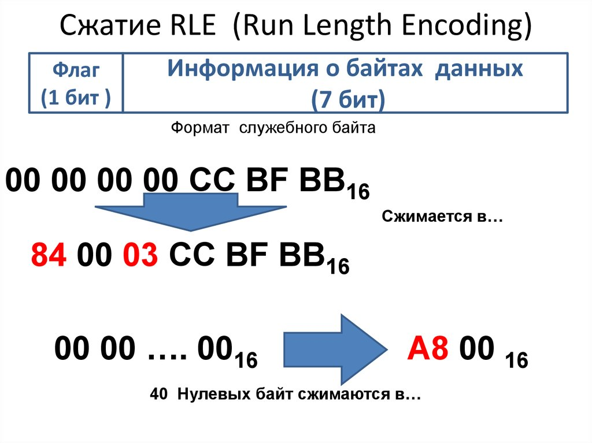
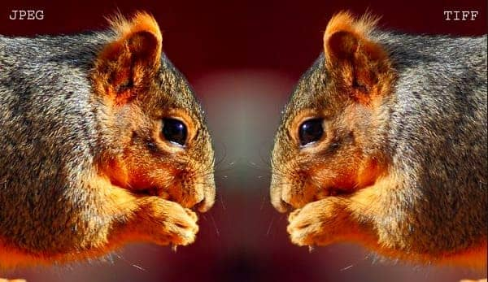
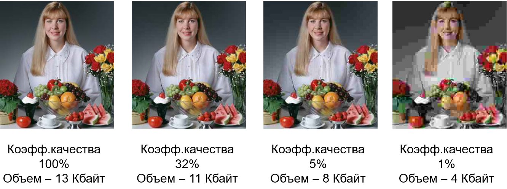

Алгоритмы сжатия данных и интересные факты
Алгоритм сжатия RLE (Run — Length Encoding)
Последовательность повторяющихся величин (набор бит
для представления пикселя ) заменяется парой —
повторяющейся величиной и числом её повторений.
Сжатие методом RLE наиболее эффективно для
изображений, которые содержат большие области
однотонной закраски
Наименее эффективно — для отсканированных
фотографий, так как в них нет длинных
последовательностей одинаковых пикселей .

Метод сжатия LZW
Назван так по первым буквам его разработчиков Lempel, Ziv, Welch
Основан на поиске повторяющихся узоров в изображении.
Сильно насыщенные узорами рисунки могут сжиматься до 0,1 от их первоначального размера.
Метод сжатия JPEG
Обеспечивает высокий коэффициент сжатия для рисунков фотографического качества.
Сжатие по методу JPEG сильно уменьшает размер файла с
растровым рисунком (возможен коэффициент сжатия 100 : 1).
Высокий коэффициент сжатия достигается за счет сжатия с
потерями, при котором в результирующем файле теряется часть
исходной информации.
Метод JPEG использует тот факт, что человеческий глаз очень
чувствителен к изменению яркости, но изменения цвета он
замечает хуже.
Поэтому при сжатии этим методом запоминается больше
информации о разнице между яркостями пикселей и меньше —
о разнице между их цветами.
Возможность задания коэффициента сжатия позволяет сделать
выбор между качеством изображения и экономией памяти.

Степени сжатия алгоритмом JPEG

Метод сжатия Deflate
Кодируется по методу динамического Хаффмана.
На входе получает таблицу частот встречаемости
символов в сообщении, строится дерево
кодирования Хаффмана (Н-дерево).
- Символы входного алфавита образуют список свободных узлов. Каждый лист имеет вес, который может быть равен либо вероятности, либо количеству вхождений символа в сжимаемое сообщение:
- Выбираются два свободных узла дерева с наименьшими весами.
- Создается их родитель с весом, равным их суммарному весу.
- Родитель добавляется в список свободных узлов, а два его потомка удаляются из этого списка.
- Одной дуге, выходящей из родителя, ставится в соответствие бит 1, другой — бит 0.
- Шаги, начиная со второго, повторяются до тех пор, пока в списке свободных узлов не останется только один свободный узел. Он и будет считаться корнем дерева.
| Наименование формата | Расширение | Алгоритм сжатия | Пример фотографии |
|---|---|---|---|
| Portable Network Graphics | PNG | Deflate |  |
| Taged Image File Format | TIFF | LZW | |
| Graphic Interchange Format | GIF |  | |
| Joint Photograffic Experts Group | JPG, JPEG | JPEG |  |
Факты и домыслы
1. JPEG теряет качество при открытии и повторном сохранении файла.
Неправда. Качество теряется только тогда, когда выбирается степень компрессии, меньшая, чем та, с которой изображение было сохранено.
2. JPEG теряет качество при редактировании файла.
Правда. При сохранении измененного файла все преобразования выполняются вновь — поэтому избегайте частого
редактирования изображений. Это относится только к случаю, когда файл закрывается: если же файл остается открытым, причин для беспокойства нет.
3. Результат компрессии с одинаковыми параметрами в разных программах будет одинаков.
Неправда. Разные программы по-разному трактуют вводимые пользователем значения. Например,
в одной программе указывается качество сохраняемого изображения (как, например, в Photoshop), в другой — степень его компрессии (обратная величина).
4. При установке максимального качества изображение сохраняется без каких-либо потерь качества.
Неправда. сжимает с потерями всегда. Но установка, например, 90% качества вместо 100% дает сокращение размера файла большее,
чем воспринимаемое глазом ухудшение качества.
5. Любой файл JPEG можно открыть в любом редакторе, понимающем формат JPEG.
Неправда. Такую разновидность JPEG, как прогрессивный (progressive JPEG), некоторые редакторы не понимают.
6. JPEG сжимает лучше, чем GIF.
Неправда. У них разная область применения. В общем случае, типичная «гифовская» картинка после конвертирования в
JPEG будет иметь больший объем.